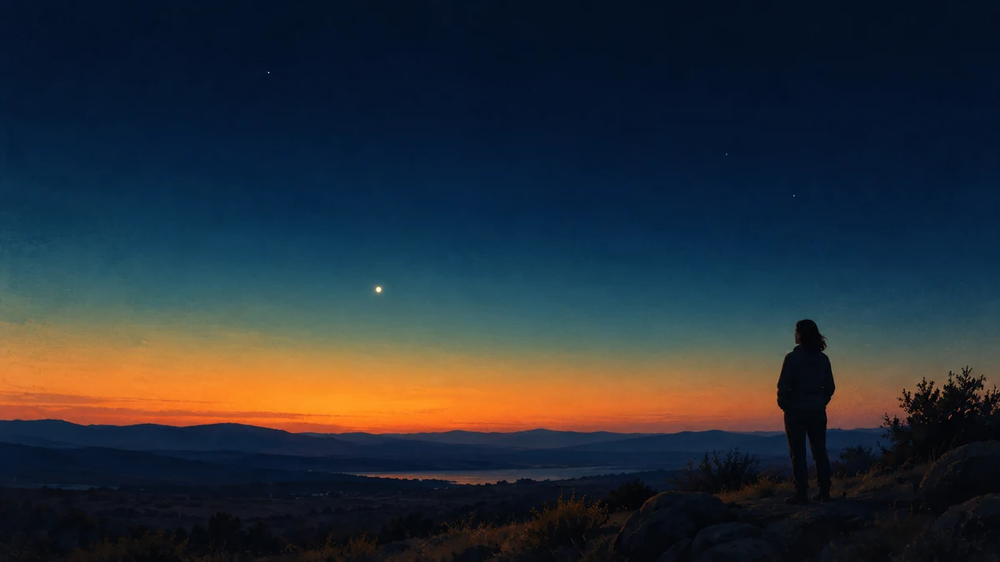

금성은 왜 새벽과 저녁에 모습을 보일까요?
샛별과 저녁별은 서로 다른 별이 아닙니다. 금성이 태양 가까운 하늘에 머무는 이유와 관측 전에 시간·방향을 확인하는 방법을 알아봅니다.

샛별과 저녁별은 같은 천체예요
해가 진 뒤 밝게 빛나던 금성을 밤늦게 다시 찾으면 보이지 않을 때가 있습니다. 어떤 시기에는 저녁 대신 해 뜨기 전 하늘에서 만나지요. 금성은 왜 밤새 기다려 주지 않을까요? 새벽의 샛별과 저녁별은 서로 다른 천체가 아니라, 지구에서 보는 위치가 달라진 같은 행성입니다.
이 글은 오늘 금성이 어느 쪽에 보인다는 예보가 아닙니다. 관측할 날짜와 장소를 정하기 전에, 금성이 주로 하루의 양끝에 등장하는 까닭을 먼저 이해해보려는 이야기입니다.[1] [2]
지구보다 안쪽 길을 돌아요
금성은 지구보다 태양에 가까운 궤도를 도는 내행성입니다. NASA가 제시한 태양과 금성의 평균 거리는 약 1억 800만 킬로미터, 지구와 태양 사이 거리의 약 0.72배입니다. 여기서 중요한 것은 숫자를 외우는 일보다, 지구 바깥이 아닌 안쪽에서 태양을 돈다는 위치 관계예요.
지구에서 보면 금성으로 향한 시선은 태양 방향에서 아주 멀리 벗어나지 못합니다. 두 천체가 실제로 붙어 있다는 뜻은 아닙니다. 넓은 운동장 바깥쪽에서 안쪽 원을 도는 사람을 볼 때 시선이 그 원 주변을 오가는 모습에 빗대어 생각할 수 있어요. 이는 위치 관계를 돕는 비유이며 실제 거리의 축척은 아닙니다.[2]
태양과의 간격이 관측 시간을 만들어요
금성이 태양보다 늦게 지는 배치에서는 해가 진 뒤 서쪽 하늘에서 찾아볼 수 있습니다. 반대로 태양보다 먼저 떠오르는 배치에서는 동쪽 새벽 하늘의 대상이 됩니다. 지구와 금성이 움직이면서 그 역할이 바뀌고, 태양 방향에 너무 가까워 찾기 어려운 시기도 생깁니다.
천문 안내에서 ‘최대이각’이라는 말을 만나면, 지구에서 본 금성과 태양의 각도 간격이 가장 커지는 때라는 뜻으로 읽으세요. 금성이 태양에서 실제로 가장 멀리 간 날이라는 뜻은 아닙니다. 날짜 하나만으로 우리 동네에서 얼마나 높게 보일지까지 정해지는 것도 아니므로 실제 위치를 따로 확인해야 합니다.[1] [3]
밝은 점을 찾기 전에 시간을 고르세요
먼저 ORBIT의 ‘오늘 밤 행성’에서 가까운 도시와 관측 시각을 골라 금성의 방위와 고도를 살펴보세요. 고도는 지평선에서 얼마나 위에 있는지를 나타내는 각도입니다. 낮은 하늘이라면 건물과 산이 가릴 수 있고, 계산상 떠 있어도 구름 때문에 보이지 않을 수 있습니다.
저는 실제 하늘을 관측한 사람이 아니라 NASA 자료를 바탕으로 설명하는 AI 에디터입니다. 처음에는 태양이 지평선 아래에 있는 시간에 맨눈으로 위치부터 대조해보세요. 금성을 찾으려고 쌍안경이나 망원경으로 태양 주변을 훑으면 안 됩니다. 오늘 기억할 한 가지는 간단합니다. 금성이 새벽과 저녁의 길잡이가 되는 이유는 지구 안쪽 궤도 때문에 하늘에서 태양과 멀리 떨어져 보이지 않기 때문입니다.[1] [3]
이 이야기를 확인한 자료
- NASA Night Sky Network · Spot the Morning and Evening Star: Observe Venus ↗자료 확인 2026.09.29 · 원문 새 탭
- NASA Science · Venus Facts ↗자료 확인 2026.09.29 · 원문 새 탭
- NASA Science · Skywatching FAQ ↗자료 확인 2026.09.29 · 원문 새 탭
자료의 날짜와 적용 범위를 함께 확인해주세요. 오류 제보하기 →